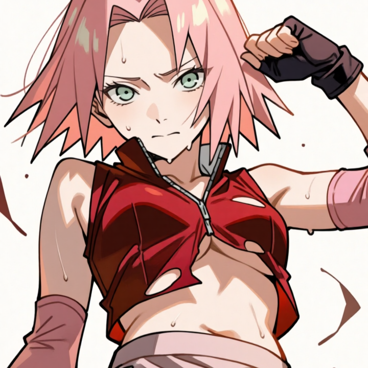

Tổng quan
Chi tiết
Prompt
Haruno Sakura
Haruno Sakura là một trong ba nhân vật chính thuộc Đội 7 (cùng với
Uzumaki Naruto và Uchiha Sasuke) trong bộ manga/anime đình đám Naruto
của tác giả Kishimoto Masashi.

Tổng quan về nhân vật
- Định danh & Xuất thân
-
Nguồn gốc: Ninja xuất thân từ một gia đình bình thường (không thuộc các tộc lớn hay có huyết kế giới hạn) tại Làng Lá (Konohagakure).
-
Vai trò: Nữ chính của bộ truyện, thành viên Đội 7 dưới sự dẫn dắt của Hatake Kakashi và là đệ tử truyền nhân của Tsunade (Hokage Đệ Ngũ).
- Nhận dạng & Đặc trưng nổi bật
- Diện mạo: Tóc hồng ngắn đặc trưng, mắt xanh lá cây, đeo băng trán ninja màu đỏ (sau này nâng cấp lên dấu ấn Bách Hào Ấn màu xanh lá cây mộc nhĩ trên trán).
- Trang phục: Thường mặc trang phục tông đỏ - hồng tiện cho việc di chuyển và chiến đấu.
- Khả năng & Sức mạnh cốt lõi
- Ninja Y thuật (Iryō Ninjutsu): Một trong những Y nhẫn xuất sắc nhất thế giới nhẫn giả, có khả năng chữa trị vết thương phức tạp và giải độc cấp độ cao.
- Sức mạnh thể chất kinh hoàng: Khả năng kiểm soát chakra cực kỳ tinh xảo giúp cô dồn chakra vào nắm đấm, tạo ra những cú đấm đập tan đất đá và san bằng địa hình.
- Bách Hào Ấn (Sōzō Saisei): Kỹ thuật lưu trữ chakra tích tụ qua nhiều năm, cho phép tái tạo tế bào tức thì và hồi phục vết thương trong trận chiến.
- Động cơ & Tính cách chủ đạo
- Nét tính cách: Thông minh, kiên cường, đôi khi nóng tính nhưng rất giàu tình cảm và lòng trắc ẩn.
- Sự phát triển: Từ một cô gái bốc đồng, tự ti và luôn phải dựa dẫm vào Naruto/Sasuke, Sakura đã nỗ lực luyện tập để trở thành một nữ ninja độc lập, đủ sức đứng ngang hàng cùng hai người đồng đội.
- Mục tiêu & Tình cảm: Bảo vệ những người thân yêu, cứu chữa bệnh nhân và dành tình cảm chân thành, kiên trì cho Uchiha Sasuke (sau này trở thành vợ của Sasuke và có con gái là Uchiha Sarada).